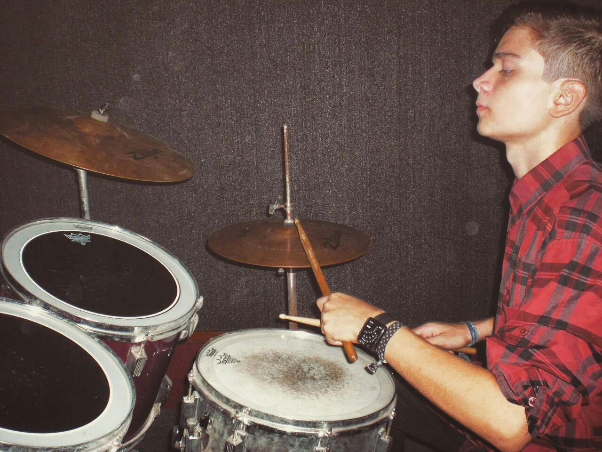

Productor / Técnico

Mi nombre es José Alejandro Pérez y soy un músico convertido en productor y técnico de grabación. Actualmente co-dirijo y trabajo en dbStudio.
Comencé mis estudios musicales en la Escuela Municipal de Música Juan Guillermo Iribarren, perteneciendo además al coro adscrito a la Banda de Conciertos del Estado Lara. Posteriormente, inicié mis estudios de batería con el profesor Juan Carlos Vásquez en la academia Acordes Infantiles, convirtiendose en mi principal instrumento.
Cómo músico, actualmente estoy trabajando en la producción de mis composiciones de manera solista como AP24 y conformo un dúo junto a José M. Pérez.
Cómo productor, trabajo principalmente con géneros como trap, hip-hop, rap y géneros electrónicos, así como también blues y rock, incluyendo elementos clásicos orquestales y coros o trabajos de voces.